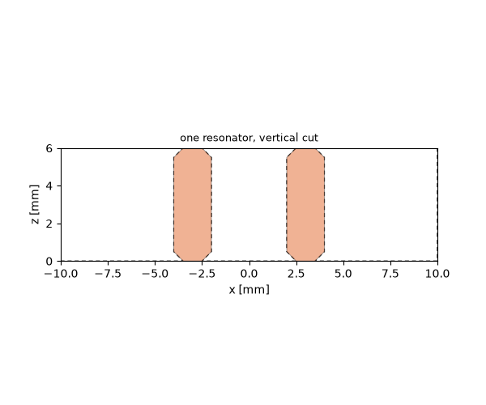
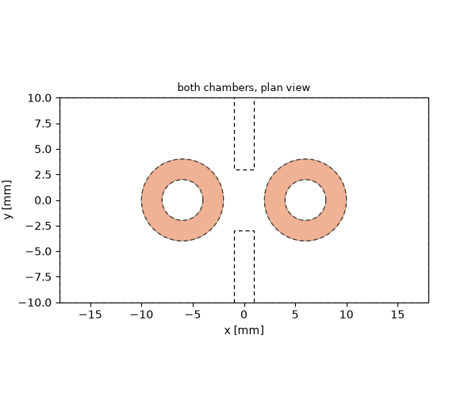
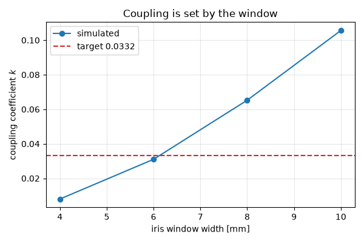
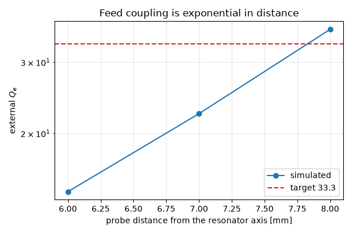
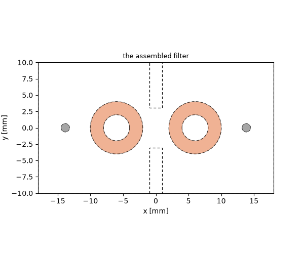
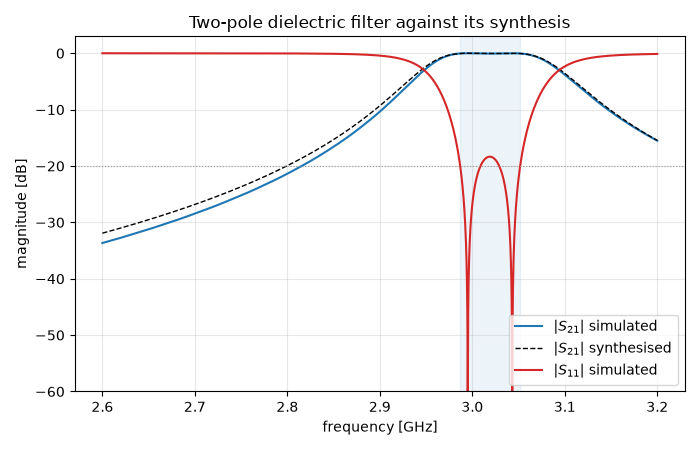
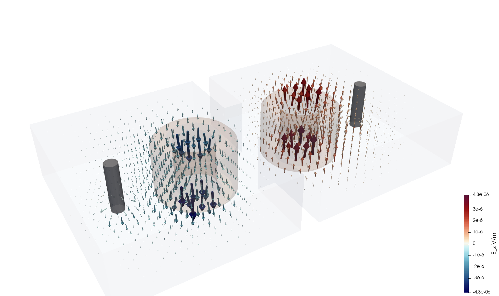

Note
Go to the end to download the full example code.
Capstone: a two-pole dielectric resonator filter#
The tutorials so far each isolated one capability. This one is a design job of the kind the rest were preparation for: a narrowband bandpass filter built from ceramic resonators, dimensioned from a specification and verified against it.
The device is a TM-mode dielectric filter. Two ceramic pucks stand in a flat metal housing, soldered to floor and lid, separated by a wall with a window in it; a probe pin at each end couples the outside world in. Filters like this sit in base-station front ends, where a ceramic of \(\varepsilon_r = 45\) shrinks the resonator to a fraction of the air-filled cavity that would resonate at the same frequency, and its low loss keeps the passband insertion loss down.
The part is a catalogue item: a ceramic tube, 8 mm outer diameter, 4 mm bore, 6 mm tall, \(\varepsilon_r = 45\), unloaded Q about 8000 at 5 GHz. Contacting both lids is what makes the mounting trivial — no support structure, and the fundamental TM mode is not degenerate, so a single-band filter has no unwanted twin to suppress.
The method matters more than the device. Nobody designs a filter by simulating the whole thing and adjusting dimensions until the curve looks right. The response is synthesised first, from a standard prototype; that synthesis names two dimensionless quantities — a coupling coefficient \(k\) and an external quality factor \(Q_e\) — and each is then extracted from a single-resonator simulation. Only at the end is the assembled filter computed, as a check. This tutorial walks that path.
import os
import tempfile
import matplotlib.pyplot as plt
import numpy as np
import magnelio as mio
from magnelio import geo, monitors, plots, ports
# The resonator: a catalogue ceramic tube.
D_OUT = 8.0e-3
D_BORE = 4.0e-3
H = 6.0e-3 # puck height = cavity inner height
CHAMFER = 0.5e-3 # broken edges, as a fabricated part has
EPS_R = 45.0
# The housing.
WIDTH = 20.0e-3 # transverse to the resonator axis
LENGTH = 36.0e-3 # end to end
SPACING = 12.0e-3 # between resonator axes
IRIS_T = 2.0e-3 # thickness of the dividing wall
# The feed.
R_PIN = 0.635e-3 # SMA inner conductor, 1.27 mm across
GAP = 1.0e-3 # port gap between floor and pin foot
pec = mio.Material.pec()
air = mio.Material.air()
ceramic = mio.Material.from_isotropic(name="ceramic", epsilon=EPS_R)
The specification, and what it asks of the geometry#
A two-pole Chebyshev with 20 dB return loss and a 2 % fractional bandwidth. The lowpass prototype elements \(g_1, g_2\) follow from the standard recursion; the two design quantities follow from them:
That is the entire synthesis. Two numbers, and the electromagnetics has not been touched yet.
FBW = 0.02 # fractional bandwidth
RL_DB = 20.0 # passband return loss
N_POLES = 2
def chebyshev_prototype(n, rl_db):
"""Lowpass prototype elements of a Chebyshev filter.
Parameters
----------
n : int
Filter order.
rl_db : float
Passband return loss [dB], which fixes the ripple.
Returns
-------
numpy.ndarray
Elements ``g_1 ... g_n`` (the source and load terms are not
returned; a symmetric even-order filter needs its load
transformer, but the coupling design uses only these).
"""
ripple_db = -10 * np.log10(1 - 10 ** (-rl_db / 10))
beta = np.log(1 / np.tanh(ripple_db / 17.37))
gamma = np.sinh(beta / (2 * n))
a = np.sin((2 * np.arange(1, n + 1) - 1) * np.pi / (2 * n))
b = gamma**2 + np.sin(np.arange(1, n + 1) * np.pi / n) ** 2
g = np.empty(n)
g[0] = 2 * a[0] / gamma
for i in range(1, n):
g[i] = 4 * a[i - 1] * a[i] / (b[i - 1] * g[i - 1])
return g
g = chebyshev_prototype(N_POLES, RL_DB)
K12_TARGET = FBW / np.sqrt(g[0] * g[1])
QE_TARGET = g[0] / FBW
print(f"prototype g1 = {g[0]:.4f}, g2 = {g[1]:.4f}")
print(f"design targets: k12 = {K12_TARGET:.4f}, Qe = {QE_TARGET:.1f}")
prototype g1 = 0.6667, g2 = 0.5455
design targets: k12 = 0.0332, Qe = 33.3
The resonator, and a first look at the mode#
The puck is a cylinder with its bore subtracted and every edge
chamfered — chamfered() with
edges="all" catches all four circular edges of the annulus at
once. A real ceramic part has broken edges, and modelling them
costs nothing here.
The housing needs no geometry at all. Setting the model background to PEC makes every region not filled by something else metal, so the air volume is the cavity and the six bounding-box faces are its walls. The pucks are then subtracted from the air and added back as ceramic.
def puck(x=0.0):
"""One ceramic resonator, chamfered, centred on ``(x, 0)``."""
body = geo.Cylinder(
origin=(x, 0.0, 0.0), radius=D_OUT / 2, height=H, axis="z", material=ceramic
)
bore = geo.Cylinder(origin=(x, 0.0, 0.0), radius=D_BORE / 2, height=H, axis="z")
return (body - bore).chamfered(edges="all", distance=CHAMFER)
def assemble(cavity, contents):
"""Fit *contents* into the air volume *cavity*.
A model rejects shapes that overlap volumetrically, so anything
placed in the cavity has to be cut out of it first and added back
as itself. Every model in this tutorial is built this way, so it
is written once.
"""
for solid in contents:
cavity = cavity - solid
model = mio.GeometryModel(background=pec)
model.add(cavity)
for solid in contents:
model.add(solid)
return model
def single_resonator(width=WIDTH):
"""One puck alone in a square housing."""
box = geo.Brick.from_ranges(
x1=-width / 2, dx=width, y1=-width / 2, dy=width, z1=0.0, dz=H, material=air
)
return assemble(box, [puck()])
fig, ax = plots.plot_cross_section(
single_resonator(), "y", 0.0, title="one resonator, vertical cut"
)

Finding the working mode#
An eigenmode analysis needs a spectral shift to search around. The automatic estimate scales the guess by the largest permittivity in the model, which is right for a filled cavity and badly wrong here: the ceramic occupies about 1 % of the volume, so the estimate lands far below the working mode, and the curl-curl null space at zero frequency swallows the requested slots. Giving the shift explicitly costs one line and removes the guesswork — the puck’s TM resonance is known to be in the low gigahertz from the part’s dimensions and permittivity.
Always check how many modes actually came back.
def eigenfrequencies(model, *, n_modes=3, f_shift=2.6e9, f_max=3.5e9, mnpw=12):
"""Resonant frequencies [Hz] of a closed structure, lowest first."""
mesh = mio.Mesh.from_geometry(
model, mio.MeshControl(min_nodes_per_wavelength=mnpw), f_max=f_max
)
result = mio.AnalysisEigenmode(
mesh=mesh,
n_modes=n_modes,
sigma=(2 * np.pi * f_shift) ** 2,
verbose=False,
).run()
f = np.asarray(result.frequencies)
if len(f) < n_modes:
raise RuntimeError(f"only {len(f)} of {n_modes} modes converged")
cells = mesh.Nx * mesh.Ny * mesh.Nz
return f, cells
f_coarse, cells_coarse = eigenfrequencies(single_resonator(), mnpw=10)
f_fine, cells_fine = eigenfrequencies(single_resonator(), mnpw=16)
print(f"coarse ({cells_coarse:6d} cells): f0 = {f_coarse[0] / 1e9:.4f} GHz")
print(f"fine ({cells_fine:6d} cells): f0 = {f_fine[0] / 1e9:.4f} GHz")
print(f"next mode is at {f_fine[1] / 1e9:.2f} GHz — the band is clear")
print(f"drift between the two grids: {100 * (f_fine[0] / f_coarse[0] - 1):+.1f} %")
coarse ( 3920 cells): f0 = 2.3278 GHz
fine ( 8192 cells): f0 = 2.5593 GHz
next mode is at 4.67 GHz — the band is clear
drift between the two grids: +9.9 %
The uncomfortable observation#
The resonant frequency is not converged. Refining the grid moves it by percent, and it is still moving. That is not a defect of the solver: a high-permittivity puck concentrates the field in a small volume with a strong discontinuity at its surface, which is exactly the situation a finite grid resolves slowly.
If the design depended on hitting an absolute frequency, this would be fatal — and it is why filters are not designed that way. What follows shows the alternative, and why it works.
Stage 2: coupling between the resonators#
Put two pucks in one housing and the pair resonates at two frequencies: an even mode and an odd mode, split apart by their mutual coupling. The coupling coefficient is their normalised separation,
and it is a ratio of frequencies. Both modes live in the same mesh and carry nearly the same discretisation error, so it largely cancels — which is what makes this quantity, unlike \(f_0\), usable on a grid one can afford.
Two pucks sitting in one open cavity couple far too strongly for a 2 % filter, by roughly an order of magnitude. The control is a wall between them with a window cut in it: below the window’s cut-off the fields reach through evanescently, and the window width sets how much.
def housing(iris_window):
"""Air volume of both chambers, joined by the iris window.
Parameters
----------
iris_window : float
Width of the window in the dividing wall [m].
"""
half = IRIS_T / 2
left = geo.Brick.from_ranges(
x1=-LENGTH / 2, x2=-half, y1=-WIDTH / 2, dy=WIDTH, z1=0.0, dz=H, material=air
)
right = geo.Brick.from_ranges(
x1=half, x2=LENGTH / 2, y1=-WIDTH / 2, dy=WIDTH, z1=0.0, dz=H, material=air
)
window = geo.Brick.from_ranges(
x1=-half,
x2=half,
y1=-iris_window / 2,
dy=iris_window,
z1=0.0,
dz=H,
material=air,
)
return geo.Union(left, right, window)
def coupled_pair(iris_window):
"""Both chambers, each holding a resonator."""
return assemble(housing(iris_window), [puck(-SPACING / 2), puck(+SPACING / 2)])
fig, ax = plots.plot_cross_section(
coupled_pair(6.0e-3), "z", H / 2, title="both chambers, plan view"
)

Sweeping the window#
def coupling_of(iris_window, mnpw=12):
"""Coupling coefficient k from the even/odd mode pair."""
f, _ = eigenfrequencies(coupled_pair(iris_window), n_modes=3, f_shift=2.3e9, mnpw=mnpw)
f1, f2 = f[0], f[1]
return (f2**2 - f1**2) / (f2**2 + f1**2), 0.5 * (f1 + f2)
windows = np.array([4.0e-3, 6.0e-3, 8.0e-3, 10.0e-3])
k_values, f_centres = np.array([coupling_of(w) for w in windows]).T
for w, k, fc in zip(windows, k_values, f_centres):
print(f"window {w * 1e3:4.1f} mm -> k = {k:.5f}, centre {fc / 1e9:.4f} GHz")
window 4.0 mm -> k = 0.00808, centre 2.6322 GHz
window 6.0 mm -> k = 0.03085, centre 2.6519 GHz
window 8.0 mm -> k = 0.06354, centre 2.5137 GHz
window 10.0 mm -> k = 0.10320, centre 2.5229 GHz
The ratio is robust where the frequency is not#
Re-run one window on the finer grid and compare both quantities.
k_fine, fc_fine = coupling_of(6.0e-3, mnpw=16)
i6 = int(np.argmin(np.abs(windows - 6.0e-3)))
print(f"window 6.0 mm, coarse grid: k = {k_values[i6]:.5f}, f = {f_centres[i6] / 1e9:.4f} GHz")
print(f"window 6.0 mm, fine grid: k = {k_fine:.5f}, f = {fc_fine / 1e9:.4f} GHz")
print(
f"k moves {100 * abs(k_fine / k_values[i6] - 1):.1f} %, "
f"f moves {100 * abs(fc_fine / f_centres[i6] - 1):.1f} %"
)
fig, ax = plt.subplots(figsize=(6.0, 4.0))
ax.plot(windows * 1e3, k_values, "o-", label="simulated")
ax.axhline(K12_TARGET, color="C3", ls="--", label=f"target {K12_TARGET:.4f}")
ax.set_xlabel("iris window width [mm]")
ax.set_ylabel("coupling coefficient $k$")
ax.set_title("Coupling is set by the window")
ax.grid(alpha=0.3)
ax.legend()
fig.tight_layout()
# Interpolate the window that meets the target.
IRIS_WINDOW = float(np.interp(K12_TARGET, k_values, windows))
print(f"\nwindow for k = {K12_TARGET:.4f}: {IRIS_WINDOW * 1e3:.2f} mm")

window 6.0 mm, coarse grid: k = 0.03085, f = 2.6519 GHz
window 6.0 mm, fine grid: k = 0.03098, f = 2.8114 GHz
k moves 0.4 %, f moves 6.0 %
window for k = 0.0332: 6.14 mm
Stage 3: how hard the outside world pulls#
The remaining design quantity is the external Q — how strongly the feed loads the end resonators. The feed is a pin standing on the floor and reaching the lid, fed across a gap at its foot. That closes a current loop through the housing, and the loop couples to the circulating magnetic field of the TM mode. (A pin left floating instead, coupling capacitively to \(E_z\), is far too weak here — worth knowing, and cheap to try.)
A modal port is not an option: those live on bounding-box faces, and
the lid is one large metal sheet with a small hole in it. A
PortLumped across the gap is the natural
feed, the same one the monopole tutorial used.
def feed_pin(x):
"""PEC pin from the port gap up to the lid, standing at ``(x, 0)``."""
return geo.Cylinder(origin=(x, 0.0, GAP), radius=R_PIN, height=H - GAP, axis="z", material=pec)
def probe_fixture(r_probe, iris_window):
"""One resonator in the real housing, fed by a probe pin.
The fixture reproduces the filter's own chamber — same length,
same iris — and simply omits the neighbouring resonator. A
convenient square test box would be wrong: :math:`Q_e` depends on
the field pattern, and the field pattern depends on the housing.
"""
x_pin = -SPACING / 2 - r_probe
model = assemble(housing(iris_window), [puck(-SPACING / 2), feed_pin(x_pin)])
model.add_port(
ports.PortLumped(name="p1", start=(x_pin, 0.0, 0.0), end=(x_pin, 0.0, GAP), Z0=50.0)
)
return model
Two ways to read Q, and why both are printed#
The reflection phase of a one-port resonator sweeps through a full turn at resonance, and its slope carries the loaded Q: \(Q = \omega_0 \tau / 4\). That reading needs the recorded signal to have rung down inside the time window, or the implicit rectangular window smears the phase slope.
Here it cannot be taken for granted. The structure is lossless apart from the port, and the puck’s higher modes do not couple to an off-centre pin at all — they ring indefinitely and hold the stored energy far above the level the energy stop criterion waits for. The port-signal criterion does not step in either: it watches modal-port envelopes and stands down on a lumped-only run. So the window is set by hand.
The safeguard is a second, independent extraction: the outgoing wave’s envelope decays as \(e^{-\omega_0 t / 2Q}\), so a straight-line fit to its decibel slope gives Q without the signal ever reaching the noise floor. When the two agree the window was long enough; when they diverge it was not. That is worth more than either number alone.
def q_external(model, *, steps=400_000, f_lo=1.8e9, f_hi=3.4e9):
"""External Q of a one-port resonator, extracted two ways.
Returns ``(f0, Q_from_group_delay, Q_from_ring_down)``.
"""
from scipy.signal import hilbert
mesh = mio.Mesh.from_geometry(
model,
# The pin drives cells far below what the wavelength asks for,
# and the time step follows the smallest cell — so the mesher's
# undershoot warning is paid for twice, in cells and in steps.
# Flooring the cell size buys about a factor two here.
mio.MeshControl(min_nodes_per_wavelength=15, min_cell_size=2.5e-4),
f_max=f_hi,
)
result = mio.AnalysisScatteringTD(mesh=mesh, f_min=f_lo, f_max=f_hi, verbose=False).run(
excited=["p1"], total_time_steps=steps
)
band = np.linspace(2.2e9, 3.2e9, 4001)
phase = np.unwrap(np.angle(result.S("p1", "p1", f_axis=band)))
tau = -np.gradient(phase, 2 * np.pi * band)
i = int(np.argmax(tau))
if i < 2 or i > len(band) - 3:
raise RuntimeError("resonance outside the evaluation window")
f0 = band[i]
q_tau = np.pi * f0 * tau[i] / 2
b = np.asarray(result.b("p1").values, dtype=float)
a = np.abs(np.asarray(result.a("p1").values, dtype=float))
start = max(int(np.argmax(a)), int(np.argmax(a < 1e-4 * a.max())))
envelope = np.abs(hilbert(b))[start:]
decibels = 20 * np.log10(np.maximum(envelope / envelope.max(), 1e-30))
window = np.flatnonzero((decibels <= -6.0) & (decibels >= -40.0))
span = slice(window[0], window[-1] + 1)
slope = np.polyfit(np.arange(span.start, span.stop) * result.dt, decibels[span], 1)[0]
q_fit = 8.6859 * np.pi * f0 / abs(slope)
return f0, q_tau, q_fit
radii = np.array([6.0e-3, 7.0e-3, 8.0e-3])
qe_values, f_probe = [], []
for r in radii:
f0, q_tau, q_fit = q_external(probe_fixture(r, IRIS_WINDOW))
qe_values.append(q_tau)
f_probe.append(f0)
print(
f"probe at {r * 1e3:.1f} mm: f0 = {f0 / 1e9:.4f} GHz, "
f"Qe = {q_tau:.1f} (group delay) / {q_fit:.1f} (ring-down)"
)
qe_values = np.array(qe_values)
probe at 6.0 mm: f0 = 2.9720 GHz, Qe = 14.6 (group delay) / 14.3 (ring-down)
probe at 7.0 mm: f0 = 2.9200 GHz, Qe = 22.8 (group delay) / 22.7 (ring-down)
probe at 8.0 mm: f0 = 2.8862 GHz, Qe = 37.0 (group delay) / 36.8 (ring-down)
External Q rises exponentially with distance#
The magnetic field outside the resonator falls off evanescently, the coupling with it, and \(Q_e\) with the square of the coupling — so \(\ln Q_e\) is a straight line in the probe radius. Two points would in principle place the design; three show that the line is real.
fig, ax = plt.subplots(figsize=(6.0, 4.0))
ax.semilogy(radii * 1e3, qe_values, "o-", label="simulated")
ax.axhline(QE_TARGET, color="C3", ls="--", label=f"target {QE_TARGET:.1f}")
ax.set_xlabel("probe distance from the resonator axis [mm]")
ax.set_ylabel("external $Q_e$")
ax.set_title("Feed coupling is exponential in distance")
ax.grid(alpha=0.3, which="both")
ax.legend()
fig.tight_layout()
# A straight line in log Q, so interpolate there.
R_PROBE = float(np.interp(np.log(QE_TARGET), np.log(qe_values), radii))
print(f"\nprobe radius for Qe = {QE_TARGET:.1f}: {R_PROBE * 1e3:.2f} mm")

probe radius for Qe = 33.3: 7.78 mm
Stage 4: the filter itself#
Every dimension is now fixed by a measurement, and none of them came
from looking at a filter response. Assembling is mechanical — and
a good place for mirrored(), which builds
the second half from the first: the filter is symmetric about
\(x = 0\), and saying so in the geometry means it cannot drift
out of symmetry through a typo.
def filter_model(iris_window, r_probe):
"""The complete two-pole filter."""
x_puck = -SPACING / 2
x_pin = x_puck - r_probe
pucks = puck(x_puck).mirrored(normal="x", copy=True)
pins = feed_pin(x_pin).mirrored(normal="x", copy=True)
model = assemble(housing(iris_window), [*pucks, *pins])
for name, x in (("p1", x_pin), ("p2", -x_pin)):
model.add_port(ports.PortLumped(name=name, start=(x, 0.0, 0.0), end=(x, 0.0, GAP), Z0=50.0))
return model
device = filter_model(IRIS_WINDOW, R_PROBE)
fig, ax = plots.plot_cross_section(device, "z", H / 2, title="the assembled filter")

One excitation is enough#
The structure is symmetric about the iris, so \(S_{22} = S_{11}\) and \(S_{12} = S_{21}\). Driving the second port would cost a full run and add nothing.
mesh = mio.Mesh.from_geometry(
device,
mio.MeshControl(min_nodes_per_wavelength=15, min_cell_size=2.5e-4),
f_max=3.4e9,
)
print(f"grid: {mesh.Nx} x {mesh.Ny} x {mesh.Nz} = {mesh.Nx * mesh.Ny * mesh.Nz} cells")
# Record the whole volume at three in-band frequencies, so the run
# also produces a ParaView session (see "Looking inside" below). A
# monitor needs its frequencies before the run, so the band edges and
# centre below are stated up front — they are the values the
# S-parameter evaluation afterwards confirms. ``interval`` is what
# makes a volume monitor affordable, and it is sized from the *band
# edge* rather than from the monitor's own frequency — see there.
F_TOP = 3.4e9
POLES = np.array([2.8705e9, 2.8924e9, 2.9143e9]) # lower band edge, centre, upper
pattern = monitors.MonitorFieldFrequency(
freqs=POLES,
fields=["E", "H"],
interval=1.0 / (20 * F_TOP),
name="volume_pattern",
)
work_dir = os.path.join(tempfile.mkdtemp(), "dr_filter")
result = mio.AnalysisScatteringTD(
mesh=mesh,
f_min=1.8e9,
f_max=F_TOP,
monitors=(pattern,),
project=work_dir,
geometry=device,
verbose=False,
).run(excited=["p1"], total_time_steps=500_000)
band = np.linspace(2.6e9, 3.2e9, 3001)
s21 = 20 * np.log10(np.abs(result.S("p2", "p1", f_axis=band)))
s11 = 20 * np.log10(np.abs(result.S("p1", "p1", f_axis=band)))
grid: 92 x 44 x 12 = 48576 cells
The yardstick: the response the synthesis promised#
One trap is worth naming before reading any numbers off the curve. The bandwidth in the synthesis is the equiripple bandwidth — where the return loss crosses its specified limit — not the −3 dB bandwidth. For a Chebyshev the two differ by a fixed factor,
which is 2.34 here. Reading the −3 dB width as the design width would make this filter look more than twice too wide.
def chebyshev_response(f, *, f0, fbw, n, rl_db):
"""Ideal lossless Chebyshev bandpass response, |S21| in dB."""
eps = 1.0 / np.sqrt(10.0 ** (rl_db / 10.0) - 1.0)
omega = (f / f0 - f0 / f) / fbw
tn = np.where(
np.abs(omega) <= 1.0,
np.cos(n * np.arccos(np.clip(omega, -1.0, 1.0))),
np.cosh(n * np.arccosh(np.clip(np.abs(omega), 1.0, None))),
)
return 10 * np.log10(1.0 / (1.0 + (eps * tn) ** 2))
matched = np.flatnonzero(s11 <= -RL_DB)
f_lo, f_hi = band[matched[0]], band[matched[-1]]
f_centre = np.sqrt(f_lo * f_hi) # geometric, as the bandpass map uses
fbw_achieved = (f_hi - f_lo) / f_centre
reference = chebyshev_response(band, f0=f_centre, fbw=fbw_achieved, n=N_POLES, rl_db=RL_DB)
in_band = (band >= f_lo) & (band <= f_hi)
deviation = np.abs(s21 - reference)[in_band]
print(f"band centre {f_centre / 1e9:.4f} GHz (target 2.90 GHz)")
print(f"ripple bandwidth {100 * fbw_achieved:.2f} % (target {100 * FBW:.2f} %)")
print(f"worst in-band insertion loss {-s21[in_band].min():.3f} dB")
print(f"deviation from the synthesised response: max {deviation.max():.2f} dB")
band centre 2.8924 GHz (target 2.90 GHz)
ripple bandwidth 2.14 % (target 2.00 %)
worst in-band insertion loss 0.062 dB
deviation from the synthesised response: max 0.02 dB
The result#
fig, ax = plt.subplots(figsize=(7.0, 4.5))
ax.plot(band / 1e9, s21, label="$|S_{21}|$ simulated")
ax.plot(band / 1e9, reference, "k--", lw=1.0, label="$|S_{21}|$ synthesised")
ax.plot(band / 1e9, s11, color="C3", label="$|S_{11}|$ simulated")
ax.axhline(-RL_DB, color="0.6", ls=":", lw=0.8)
ax.axvspan(f_lo / 1e9, f_hi / 1e9, color="C0", alpha=0.08)
ax.set_xlabel("frequency [GHz]")
ax.set_ylabel("magnitude [dB]")
ax.set_ylim(-60, 3)
ax.set_title("Two-pole dielectric filter against its synthesis")
ax.grid(alpha=0.3)
ax.legend(loc="lower right")
fig.tight_layout()

Looking inside: how the filter passes power#
The run above already carries a field monitor over the whole volume,
which turns it into a ParaView session ready to open. The one
parameter worth dwelling on is interval.
Left to itself, a frequency monitor accumulates its DFT at every
time step — here that would be 261 000 contributions from every cell
in the model, about as much arithmetic as the solver itself.
interval thins the sampling to every 117th step, which removes
that surcharge almost entirely. (Recording three frequencies
instead of one costs nothing measurable on top: the stride saves the
per-step field interpolation, which is paid once however many bins
are accumulated.) Unlike the snapshot interval of a
MonitorFieldTime, this is genuine
under-sampling of an oscillating integrand, and the safe habit from
tutorial 07 applies: size it from the
top of the excited band — F_TOP, 3.4 GHz, twenty samples per
period here — not from the monitor’s own frequencies, or the band
edge folds onto the very bins being recorded.
Because the run was given a project=, the session is on disk
when it finishes — paraview.pvsm next to the results, ready to
double-click. Below is that session rendered: the electric field as
vectors throughout the volume, housing and ceramic transparent, the
arrows coloured by their own \(z\) component so the sense stays
readable where one points away from the viewer.
{kind=link}

Two things stand out. The arrows are vertical almost everywhere — this is the TM mode the ceramic was chosen for, its field running floor to lid through the puck, which is exactly why contacting both lids is the right way to mount it. And the two resonators point opposite ways at this instant.
That second observation deserves care, because it is easy to misread as a standing-wave symmetry. It is not. A passband is transparent by construction, so the field here is a travelling wave carrying power from one port to the other, and the resonators are separated in phase rather than locked to a symmetry. The monitor recorded three frequencies across the band, so that claim can simply be read off it: sum \(E_z\) over each half of the housing and compare the phases.
x_cells = pattern.region.xc
left, right = x_cells < 0.0, x_cells >= 0.0
print(" f [GHz] phase L phase R difference")
for i, f in enumerate(pattern.f):
ez = pattern.data["Ez"][i]
phi_l = np.degrees(np.angle(ez[left].sum()))
phi_r = np.degrees(np.angle(ez[right].sum()))
delta = (phi_r - phi_l + 180.0) % 360.0 - 180.0
print(f" {f / 1e9:7.4f} {phi_l:+8.1f}° {phi_r:+8.1f}° {delta:+8.1f}°")
f [GHz] phase L phase R difference
2.8705 +51.1° +120.0° +68.9°
2.8924 +50.3° +146.7° +96.4°
2.9143 +51.0° +173.1° +122.1°
A steady drift of tens of degrees, not the 0° or 180° a standing even/odd pair would show — and nothing in between is available to a standing wave. Those modes belong to the unloaded pair; with 50 Ω on both ports they have merged into the transfer characteristic and cannot be recovered from a driven run at all.
One consequence for reading the picture: a complex field has no single “the” field pattern, only a value at each phase of the cycle. What is plotted is a snapshot rotated to the instant where both resonators are near their peaks — at phase zero, one of them happens to be near a zero crossing and the render looks like a half-empty filter.
What this shows#
The passband lands on the synthesised curve to a hundredth of a decibel, from two dimensions — an iris window and a probe radius — each measured on a different single-resonator model. Neither measurement ever saw a filter response. That is the point of designing through \(k\) and \(Q_e\).
It also works despite the resonant frequency itself being the least converged quantity in the whole exercise. The coupling quantities are ratios and differences of frequencies computed in the same mesh, and the discretisation error largely cancels in them. A real build handles the residual frequency offset the same way the simulation would: with a tuning screw.
Three things generalise beyond this device:
Measure in the fixture you will build. The external Q taken in a convenient square box put the probe about 10 % off, because \(Q_e\) follows the field pattern and the field pattern follows the housing.
Two independent extractions beat one trusted one. Group delay and ring-down agree only when the time window is adequate, so the pair diagnoses the run for free.
Watch what sets the time step. The feed pin, not the wavelength, dictated the grid here; flooring the cell size roughly halved the runtime and left the answer where it was.
Extending to a higher order changes nothing structural: synthesise more prototype elements, extract one \(k\) per adjacent pair, and mirror one more chamber into the housing.
Total running time of the script: (5 minutes 55.792 seconds)